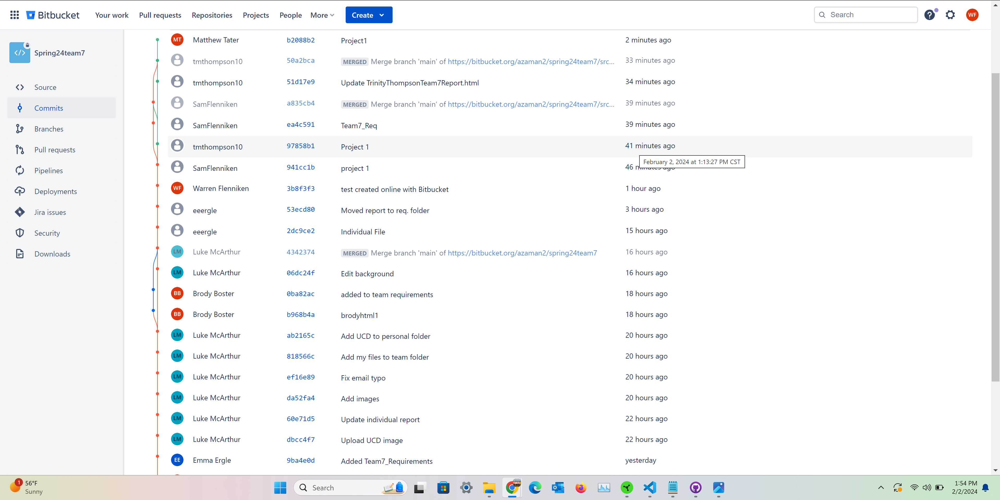

| Header Table | |||
|---|---|---|---|
| Student Name | Student Email | CWID | Hours Contributed |
| Brody Boster | btboster@crimson.ua.edu | 12207168 | 5 |
| Emma Ergle | eeergle@crimson.ua.edu | 11905525 | 5 |
| Luke McArthur | lgmcarthur@crimson.ua.edu | 12243723 | 5 |
| Matthew Tater | matater@crimson.ua.edu | 12139075 | 5 |
| Trinity Thompson | tmthompson10@crimson.ua.edu | 12273709 | 5 |
| Warren Flenniken | wsflenniken@crimson.ua.edu | 12229130 | 5 |
| Task Distribution Table | ||
|---|---|---|
| Who? | What? | Percentage Contributed |
| Brody Boster | Glossary Terms, Use Case Diagram, Individual Report | 16% |
| Emma Ergle | Glossary Terms, Use Case Diagram, Individual Report | 16% |
| Luke McArthur | Glossary Terms, Use Case Diagram, Individual Report | 16% |
| Matthew Tater | Glossary Terms, Use Case Diagram, Individual Report | 16% |
| Trinity Thompson | Glossary Terms, Use Case Diagram, Individual Report | 16% |
| Warren Flenniken - Submitter | Group Report, Use Case Diagram, Use Case List | 16% |
Use Case Diagram

Glossary

Use Case Descriptions


Bitbucket Statistics
